Every BISoN edge model is Bayesian, so it needs priors: probability
distributions that describe which parameter values are plausible before
the data are seen. This article describes what each prior controls, the
scales on which the priors are defined, and two ways of checking them:
plotting the prior distributions with prior_check(), and
simulating data from the priors with
prior_predictive_check(). A basic analysis is described in
vignette("getting_started").
There is no prior that is correct for every study. A prior describes what is plausible for a particular system and sampling design, so it should be chosen with knowledge of that system and then checked.
The priors in each model
get_default_priors() returns a named list of priors for
a model type. Priors are given as strings, such as
"normal(0, 2.5)".
get_default_priors("binary")
#> $edge
#> [1] "normal(0, 2.5)"
#>
#> $fixed
#> [1] "normal(0, 2.5)"
#>
#> $random_std
#> [1] "half-normal(1)"
#>
#> $zero_prob
#> [1] "beta(1, 1)"
get_default_priors("count")
#> $edge
#> [1] "normal(0, 1)"
#>
#> $fixed
#> [1] "normal(0, 2.5)"
#>
#> $random_std
#> [1] "half-normal(1)"
#>
#> $zero_prob
#> [1] "beta(1, 1)"Binary and count models have the same four priors:
| Prior | Parameter | Distribution |
|---|---|---|
edge |
Edge weight of each dyad, on the link scale | Normal |
fixed |
Each fixed effect parameter (+ x in the formula), on
the link scale |
Normal |
random_std |
Standard deviation of each group of random effects | Half-normal |
zero_prob |
Probability that an observation is a structural zero (a zero that occurs regardless of the edge weight), in zero-inflated models | Beta |
Priors for parameters that are not in the model are ignored. For
example, random_std only matters if the formula contains a
random effect, and zero_prob only matters if
zero_inflated = TRUE. Random effects are centred on 0, so
they have no prior for their mean.
The default edge prior differs between the two model
types: normal(0, 2.5) for binary models and
normal(0, 1) for count models. The other defaults are the
same.
With partial_pooling = TRUE, the edge prior
is used differently. The edge weights are given a shared normal
distribution. Its mean is the mean of the edge prior, and
its standard deviation, edge_sigma, is estimated from the
data. The second value of the edge prior is then the scale
of a half-normal prior on edge_sigma.
Conjugate models calculate the posterior exactly, without sampling.
They only estimate edge weights, so they only have an edge
prior. It is defined on the natural scale rather than the link scale: a
beta distribution over the probability for
"binary_conjugate", and a gamma distribution (shape and
rate) over the rate for "count_conjugate".
get_default_priors("binary_conjugate")
#> $edge
#> [1] "beta(1, 1)"
get_default_priors("count_conjugate")
#> $edge
#> [1] "gamma(1, 1)"bison_model() checks the priors before fitting. Any
prior that is missing from the list is filled in from the defaults, and
a prior with the wrong distribution gives an error:
bison_model(
(event | effort) ~ dyad(node_1_id, node_2_id),
data = simulate_bison_model("binary", aggregated = TRUE)$df_sim,
model_type = "binary_conjugate",
priors = list(edge = "normal(0, 1)")
)
#> Error:
#> ! The `edge` prior for "binary_conjugate" models must be a beta distribution, e.g. "beta(1, 1)", but got "normal(0, 1)".Link scales
In binary and count models, the edge weights and other effects are combined on a link scale and then transformed:
- In binary models the link is the logit. The probability of an event
in a sampling period is
plogis(edge + effects). An edge weight of 0 corresponds to a probability of 0.5, -2 to about 0.12, and 2 to about 0.88. - In count models the link is the log. The expected number of events
is
exp(edge + effects) * effort, so an edge weight of 0 corresponds to a rate of one event per unit of effort.
The edge and fixed priors are therefore
distributions over log-odds (binary) or log-rates (count). A fixed
effect with a normal(0, 2.5) prior is a change in log-odds
or log-rate per unit of the predictor, so the scale of the predictor
affects what the prior means. A predictor measured in days and the same
predictor measured in years imply very different effect sizes under the
same prior.
A normal prior on the logit scale does not have the same shape on the probability scale. A wide normal prior on the logit scale puts much of its weight close to 0 and 1. This can be seen by drawing values from the prior and transforming them:
edge_logit <- rnorm(10000, mean = 0, sd = 2.5)
hist(plogis(edge_logit), breaks = 50, main = "normal(0, 2.5) on the logit scale",
xlab = "Edge weight (probability)", col = "grey80", border = "white")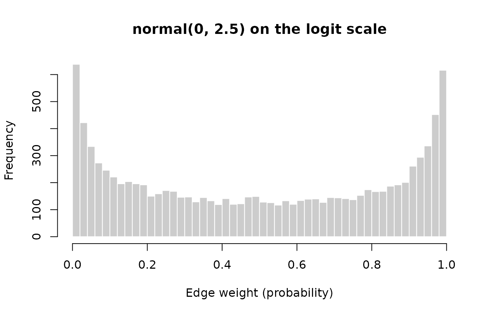
edge_logit <- rnorm(10000, mean = 0, sd = 1)
hist(plogis(edge_logit), breaks = 50, main = "normal(0, 1) on the logit scale",
xlab = "Edge weight (probability)", col = "grey80", border = "white")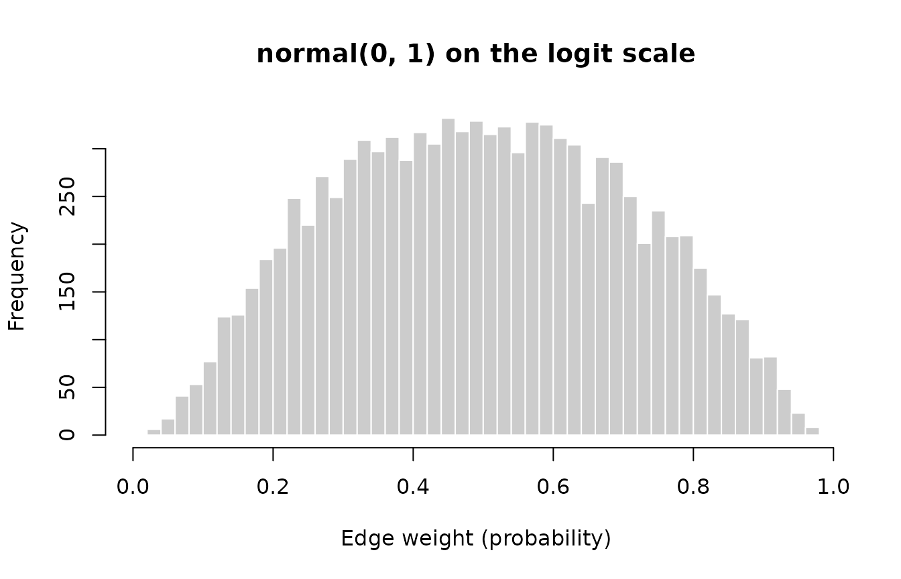
The narrower prior puts more weight on intermediate probabilities and less near 0 and 1. Neither is correct in general. If most dyads in a population are seen together rarely, a prior centred below 0 on the logit scale may describe the system better than either.
Plotting priors with prior_check()
prior_check() plots the density of each prior in a list.
The edge prior is shown on the natural scale (probability for binary
models, rate per unit of effort for count models), and the other priors
are shown on the scale on which they are defined. For the default binary
priors, the edge prior has most of its density near 0 and 1, as in the
histogram above:
prior_check(get_default_priors("binary"), "binary")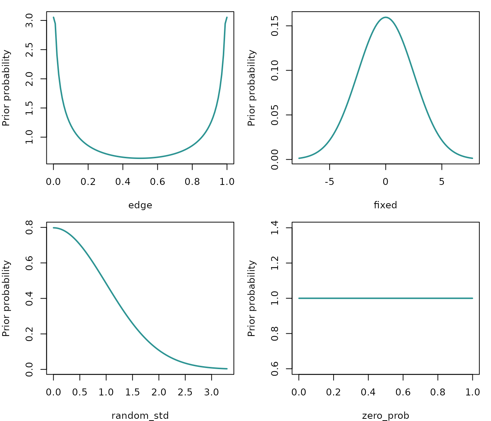
For count models:
prior_check(get_default_priors("count"), "count")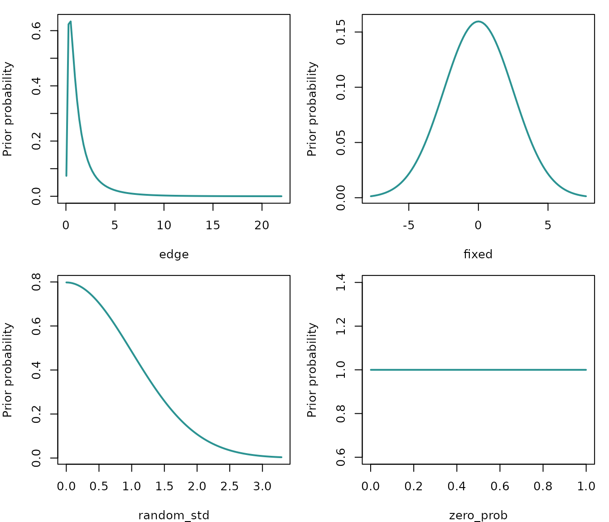
For conjugate models the edge prior is already on the natural scale:
prior_check(list(edge = "beta(1, 4)"), "binary_conjugate")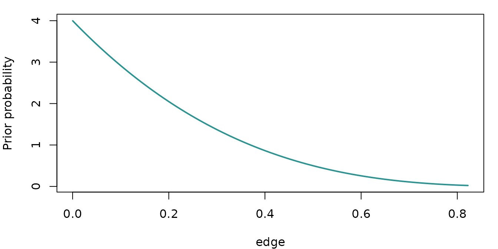
prior_check() shows each prior on its own. It does not
show what the priors imply together, for example when an edge weight and
a fixed effect are added on the link scale. Prior predictive checks
address this.
Prior predictive checks
A prior predictive check simulates data from the model using only the
priors, ignoring the observed events. The simulated data can then be
compared with what is plausible for the study system.
prior_predictive_check() takes the same formula, data,
model type and priors as bison_model(). Only the dyads, the
observation effort and any predictors are taken from the data. Other
arguments are passed on to bison_model() and from there to
Stan: here seed makes the results reproducible and
show_messages = FALSE hides the sampler’s progress
messages.
The examples below use simulated aggregated data, with one row per dyad:
sim_data <- simulate_bison_model("binary", aggregated = TRUE, max_obs = 20)
df <- sim_data$df_sim
head(df)
#> node_1_id node_2_id event effort age_diff age_1 age_2 duration
#> 1 1 2 5 12 -5.00907131 17.45685 22.46592 12
#> 2 1 3 5 11 -0.09738967 17.45685 17.55424 11
#> 3 1 4 5 13 -5.73579606 17.45685 23.19264 13
#> 4 1 5 2 3 -0.23941922 17.45685 17.69627 3
#> 5 1 6 6 17 -6.44982679 17.45685 23.90667 17
#> 6 1 7 6 18 -3.97442557 17.45685 21.43127 18With plot_type = "density", the plot shows the
distribution of event rates across dyads (here, the proportion of
sampling periods in which each dyad was seen together) in 20 datasets
simulated from the priors:
priors <- get_default_priors("binary")
prior_predictive_check(
(event | effort) ~ dyad(node_1_id, node_2_id),
data = df,
model_type = "binary",
priors = priors,
plot_type = "density",
num_draws = 20,
seed = 1,
show_messages = FALSE
)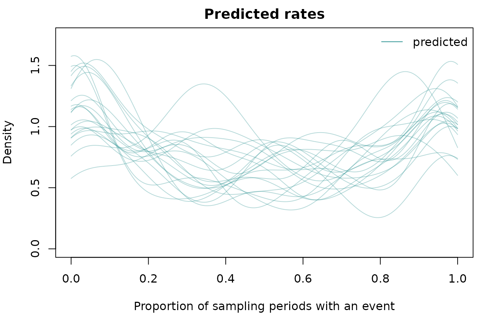
With plot_type = "stats", the plot shows histograms of
four summary statistics across the simulated datasets: the proportion of
dyads with no events, and the mean, standard deviation and maximum of
the event rates:
prior_predictive_check(
(event | effort) ~ dyad(node_1_id, node_2_id),
data = df,
model_type = "binary",
priors = priors,
plot_type = "stats",
num_draws = 20,
seed = 1,
show_messages = FALSE
)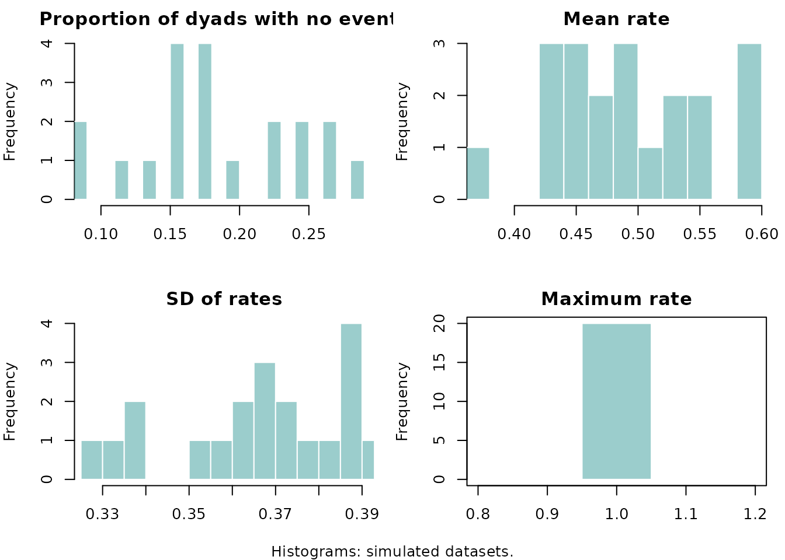
Under the default prior, the simulated rates cover the whole range from 0 to 1, with more dyads near 0 and 1 than near the middle. The mean rate of the simulated datasets is between about 0.4 and 0.6, and in every one of the 20 simulated datasets at least one dyad has an event in every sampling period (a maximum rate of 1).
The observed data are not shown in prior predictive checks. The question is whether the simulated datasets cover the range of data that could plausibly be observed, not whether they match the data at hand. Choosing a prior so that the prior predictions match the observed data uses the data twice.
Changing the edge prior
Suppose that previous studies of the population suggest that most
dyads are seen together in a small proportion of sampling periods. A
prior such as normal(-2, 1) on the logit scale describes
this. Its median is plogis(-2), about 0.12:
priors_low <- get_default_priors("binary")
priors_low$edge <- "normal(-2, 1)"
prior_predictive_check(
(event | effort) ~ dyad(node_1_id, node_2_id),
data = df,
model_type = "binary",
priors = priors_low,
plot_type = "density",
num_draws = 20,
seed = 1,
show_messages = FALSE
)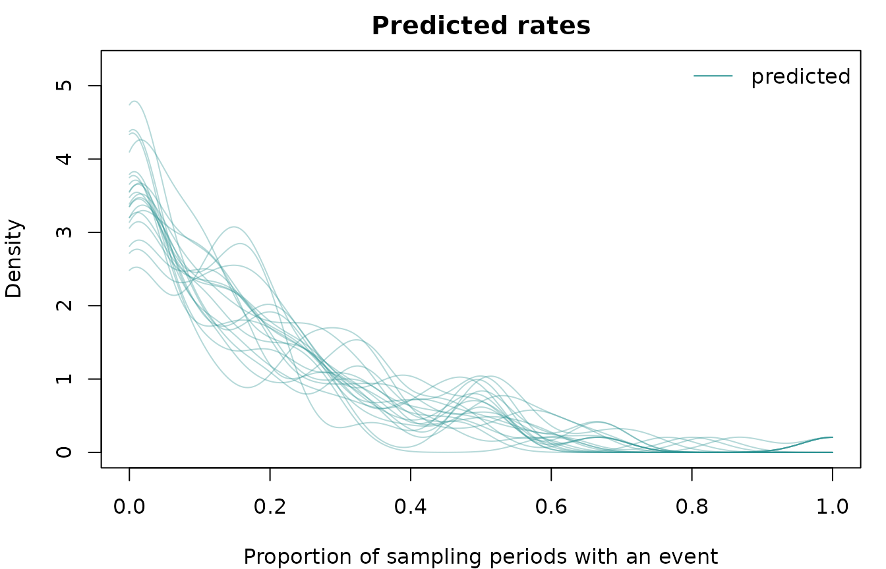
prior_predictive_check(
(event | effort) ~ dyad(node_1_id, node_2_id),
data = df,
model_type = "binary",
priors = priors_low,
plot_type = "stats",
num_draws = 20,
seed = 1,
show_messages = FALSE
)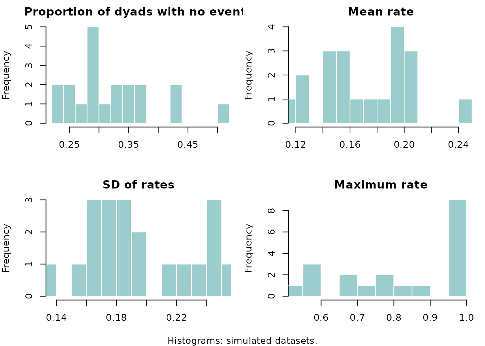
With this prior, most simulated dyads have rates below 0.4. The mean rate of the simulated datasets is between about 0.1 and 0.2, between about a quarter and a half of the dyads have no events, and the maximum rate is below 1 in most of the simulated datasets.
If this matches what is known about the population, the new prior may be more appropriate than the default. If it does not, for example in a population where some pairs are almost always together, it may exclude plausible values. The default prior allows a wider range of outcomes, at the cost of putting weight on rates that may be implausible for a given system.
The same checks can be run for conjugate models, which are faster because no sampling is needed:
prior_predictive_check(
(event | effort) ~ dyad(node_1_id, node_2_id),
data = df,
model_type = "binary_conjugate",
priors = list(edge = "beta(1, 4)"),
plot_type = "density"
)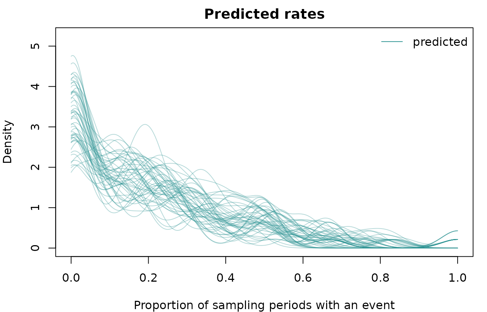
Priors and sparsely observed dyads
The effect of the prior on an edge weight depends on how much the dyad was observed. A dyad observed in many sampling periods has a posterior (the distribution of its edge weight after the data are taken into account) that is mostly determined by the data. A dyad observed only once or twice has a posterior that is mostly determined by the prior.
To show this, the same data are fitted with conjugate models using
two different priors: beta(1, 1), which is uniform over
probabilities, and beta(1, 9), which has a mean of 0.1.
fit_flat <- bison_model(
(event | effort) ~ dyad(node_1_id, node_2_id),
data = df,
model_type = "binary_conjugate",
priors = list(edge = "beta(1, 1)")
)
fit_low <- bison_model(
(event | effort) ~ dyad(node_1_id, node_2_id),
data = df,
model_type = "binary_conjugate",
priors = list(edge = "beta(1, 9)")
)The rows of df are in the same order as the dyads in the
edge lists, so the two sets of estimates can be placed side by side with
the observation effort:
edges_flat <- get_edgelist(fit_flat)
edges_low <- get_edgelist(fit_low)
comparison <- data.frame(
dyad = paste(edges_flat$node_1, edges_flat$node_2, sep = "-"),
events = df$event,
effort = df$effort,
median_flat = edges_flat$median,
median_low = edges_low$median
)
comparison$difference <- comparison$median_flat - comparison$median_lowThe dyads with the least and the most observation effort are:
comparison <- comparison[order(comparison$effort), ]
head(comparison, 5)
#> dyad events effort median_flat median_low difference
#> 14 2-7 1 1 0.705 0.161 0.544
#> 22 3-8 0 2 0.210 0.060 0.150
#> 25 4-5 2 2 0.791 0.233 0.558
#> 40 7-8 1 2 0.493 0.152 0.341
#> 4 1-5 2 3 0.617 0.214 0.403
tail(comparison, 5)
#> dyad events effort median_flat median_low difference
#> 16 2-9 11 18 0.601 0.426 0.175
#> 17 2-10 16 18 0.860 0.608 0.252
#> 10 2-3 15 19 0.771 0.555 0.216
#> 36 6-7 12 19 0.624 0.445 0.179
#> 37 6-8 8 19 0.427 0.307 0.120For the dyad observed in a single sampling period, the posterior
median is 0.70 with the uniform prior and 0.16 with
beta(1, 9). For the most observed dyads the medians still
differ, but by less. The plot below shows the difference for every
dyad:
plot(comparison$effort, comparison$difference,
xlab = "Observation effort (sampling periods)",
ylab = "Difference in posterior median",
pch = 19, col = "grey30")
abline(h = 0, lty = 2)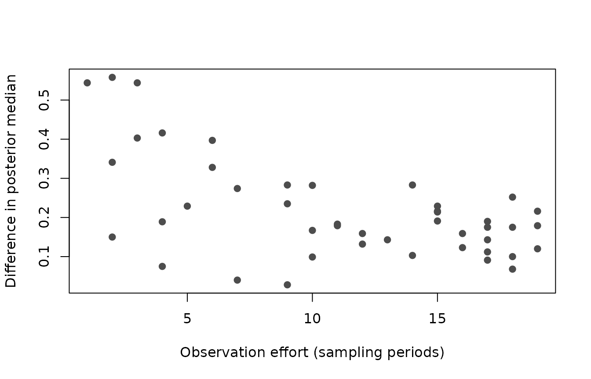
The differences are largest for the dyads with the least observation
effort, and decrease as effort increases. The difference also depends on
the data: the dyad 3-8, observed in 2 periods with no
events, has a smaller difference than other dyads with similar effort,
because its data agree more closely with the beta(1, 9)
prior. In this dataset the differences do not disappear even for the
most observed dyads. The beta(1, 9) prior is fairly strong
(it carries about as much information as 10 sampling periods), and most
of the dyads in the tables above were seen together in far more than 10%
of their sampling periods.
In most datasets some dyads are observed much less than others. The choice of prior matters most for these dyads, and for any analysis that depends on them. This has two practical consequences:
- Results that depend on sparsely observed dyads should be checked for sensitivity to the prior, by refitting the model with other plausible priors and comparing the results.
- Network metrics and regressions that combine many edge weights can be affected by the prior if many dyads are sparsely observed, even when the difference for each dyad is small.
Summary
-
get_default_priors()gives a starting point, not a recommendation for every study. - Priors in binary and count models are on the logit or log scale. Transforming draws from the prior, or running a prior predictive check, shows what they imply on the natural scale.
-
prior_check()shows each prior on its own.prior_predictive_check()shows the data implied by all the priors together. - The prior has the most influence on dyads with little observation effort. Checking the sensitivity of the results to the prior is most important when many dyads are sparsely observed.